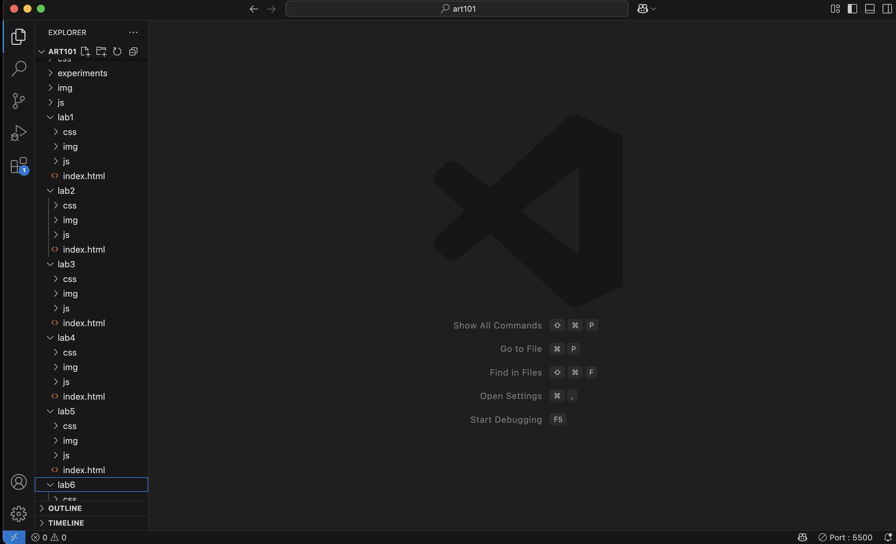
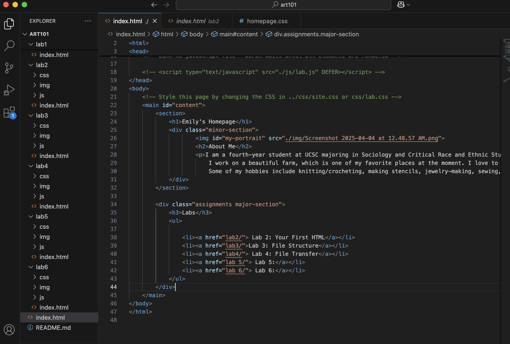
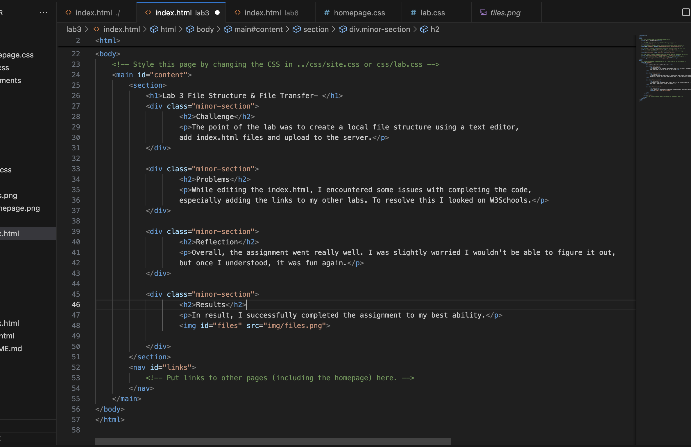
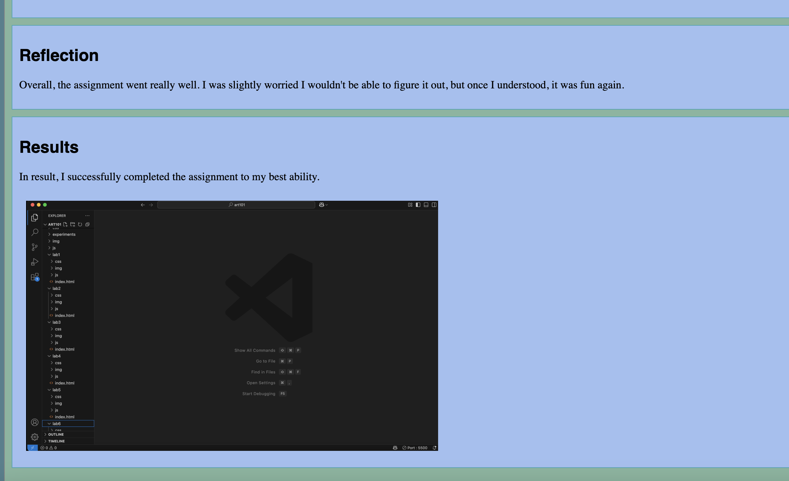

Lab 3 File Structure & File Transfer-
Challenge
The point of the lab was to create a local file structure using a text editor, add index.html files and upload to the server.
Problems
While editing the index.html, I encountered some issues with completing the code, especially adding the links to my other labs. To resolve this I looked on W3Schools.
Reflection
Overall, the assignment went really well. I was slightly worried I wouldn't be able to figure it out, but once I understood, it was fun again.
Results
In result, I successfully completed the assignment to my best ability.
Screenshot of my file structure.
Screenshot of my homepage.
Screenshot of my lab3 index.html
Screenshot of my webpage.